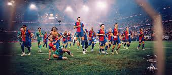

História do Barcelona: o clube que revolucionou o futebol
No ano em que completa 121 anos, a equipe catalã tem uma história memorável. O FC Barcelona percorreu um longo caminho desde a sua fundação em 1899

No dia 29 de novembro de 2020, o Futebol Clube Barcelona completa 121 anos, repletas de acontecimentos marcantes, craques, futebol ofensivo e inovador. Aqueles que acompanham e admiram o ‘Barça’ se emocionam por tudo que o clube viveu. Então, acompanhe a seguir a história do Barcelona e os momentos mais marcantes de sua trajetória.